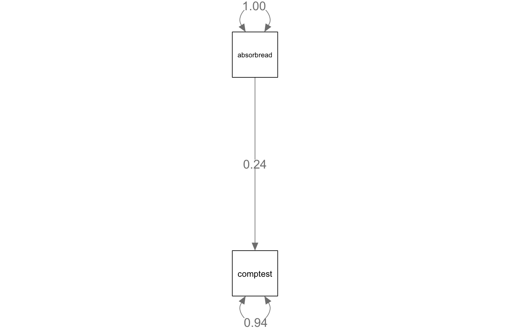
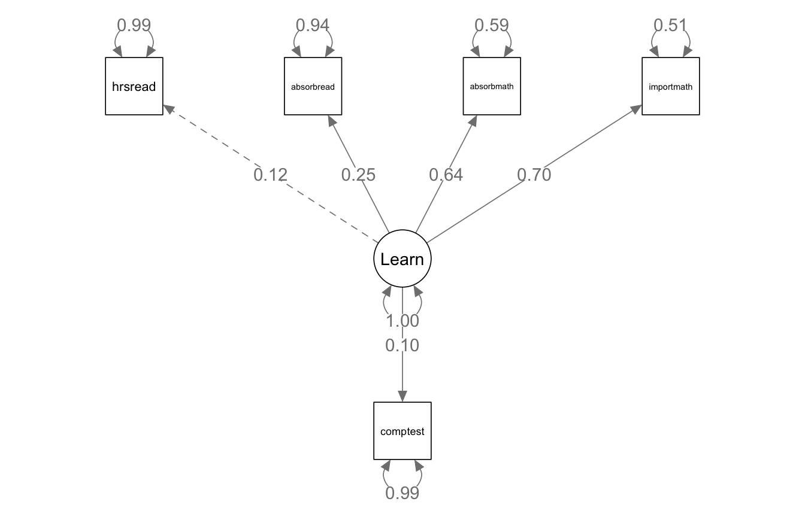

library(tidyverse)
library(haven)
library(lavaan)
library(semPlot)11 Structural Equation Modeling I: Path Analysis and Latent Variables
Structural equation modeling (SEM) is a general framework that includes many of the models in this book as special cases. In this chapter, we first show that familiar analyses (regression, the t-test, and ANOVA) can all be written as path models in lavaan. Then we combine a measurement model, like the CFAs in Chapter 10, with a regression model to estimate a full SEM.
11.1 The data
We return to the ELS:2002 data from Chapter 6. We keep a small set of variables and give them readable names. transmute() creates and keeps only the variables we name.
hrsread: hours per week spent reading outside of schoolabsorbmath: “Gets totally absorbed in mathematics”absorbread: “Gets totally absorbed in reading”importmath: “Mathematics is important”comptest: standardized math and reading test scoreap: ever took part in an Advanced Placement program (1 = yes, 0 = no)sesq: SES quartile
The three attitude items are rated from 1 (strongly agree) to 4 (strongly disagree), so we reverse-code them (5 minus the score). Higher values then mean more absorption and importance. As in Chapter 6, negative values are missing data codes.
els <- read_dta("data/ELS_Logistic.dta")
els_clean <- els |>
zap_labels() |>
mutate(across(c(bys43, bys87a, bys87e, bys87f, bytxcstd, bys33a, byses1qu),
~ if_else(.x < 0, NA, .x))) |>
transmute(
hrsread = bys43,
absorbmath = 5 - bys87a,
absorbread = 5 - bys87e,
importmath = 5 - bys87f,
comptest = bytxcstd,
ap = bys33a,
sesq = factor(byses1qu, levels = 1:4,
labels = c("Lowest", "Second", "Third", "Highest"))
) |>
filter(!is.na(comptest))
summary(els_clean) hrsread absorbmath absorbread importmath
Min. : 0.000 Min. :1.000 Min. :1.000 Min. :1.000
1st Qu.: 0.000 1st Qu.:2.000 1st Qu.:2.000 1st Qu.:2.000
Median : 1.000 Median :3.000 Median :3.000 Median :3.000
Mean : 2.722 Mean :2.509 Mean :2.732 Mean :2.486
3rd Qu.: 3.000 3rd Qu.:3.000 3rd Qu.:3.000 3rd Qu.:3.000
Max. :21.000 Max. :4.000 Max. :4.000 Max. :4.000
NAs :1333 NAs :4152 NAs :4300 NAs :4134
comptest ap sesq
Min. :20.91 Min. :0.0000 Lowest :3608
1st Qu.:43.79 1st Qu.:0.0000 Second :3604
Median :50.97 Median :0.0000 Third :3731
Mean :50.66 Mean :0.1823 Highest:4301
3rd Qu.:57.81 3rd Qu.:0.0000 NAs : 648
Max. :81.04 Max. :1.0000
NAs :1524 We keep only students with a test score, since it is the outcome in most models below. Many students are still missing one or more predictors.
11.1.1 Handling missing data
In lavaan, missing = "ml" uses full information maximum likelihood (FIML), which keeps every case and uses all of the data each case has (see Chapter 7). By default, FIML applies only to the outcome variables. Adding fixed.x = FALSE extends it to the predictors. We also use estimator = "MLR", which gives standard errors that are robust to non-normal data. We use these three options throughout the chapter.
11.2 Path analysis
11.2.1 Simple regression
A path model uses the same ~ operator as lm(). The line below regresses the test score on reading absorption:
model1 <- 'comptest ~ absorbread'
fit1 <- sem(model1, data = els_clean,
estimator = "MLR", missing = "ml", fixed.x = FALSE)
summary(fit1, standardized = TRUE)lavaan 0.7-2 ended normally after 13 iterations
Estimator ML
Optimization method NLMINB
Number of model parameters 5
Number of observations 15892
Number of missing patterns 2
Model Test User Model:
Standard Scaled
Test Statistic 0.000 0.000
Degrees of freedom 0 0
Parameter Estimates:
Standard errors Sandwich
Information bread Observed
Observed information based on Hessian
Regressions:
Estimate Std.Err z-value P(>|z|) Std.lv Std.all
comptest ~
absorbread 2.653 0.097 27.378 0.000 2.653 0.244
Intercepts:
Estimate Std.Err z-value P(>|z|) Std.lv Std.all
.comptest 43.473 0.267 162.527 0.000 43.473 4.400
absorbread 2.709 0.008 320.759 0.000 2.709 2.975
Variances:
Estimate Std.Err z-value P(>|z|) Std.lv Std.all
.comptest 91.776 0.974 94.219 0.000 91.776 0.940
absorbread 0.829 0.009 93.329 0.000 0.829 1.000Compare this to the same model fit with lm():
lm1 <- lm(comptest ~ absorbread, data = els_clean)
summary(lm1)
Call:
lm(formula = comptest ~ absorbread, data = els_clean)
Residuals:
Min 1Q Median 3Q Max
-31.4772 -6.3428 0.4107 6.8612 29.4166
Coefficients:
Estimate Std. Error t value Pr(>|t|)
(Intercept) 44.61550 0.27873 160.07 <2e-16 ***
absorbread 2.59793 0.09679 26.84 <2e-16 ***
---
Signif. codes: 0 '***' 0.001 '**' 0.01 '*' 0.05 '.' 0.1 ' ' 1
Residual standard error: 9.481 on 11590 degrees of freedom
(4300 observations deleted due to missingness)
Multiple R-squared: 0.05853, Adjusted R-squared: 0.05844
F-statistic: 720.5 on 1 and 11590 DF, p-value: < 2.2e-16nobs(lm1)[1] 11592The coefficients are very close. The key difference is the sample: lm() drops every student missing absorbread, while the path model keeps all of them. With only one predictor, the standardized coefficient (Std.all) is the correlation between the two variables.
semPaths(fit1, whatLabels = "std", edge.label.cex = 1.2, sizeMan = 10,
intercepts = FALSE, nCharNodes = 0)
11.2.2 Independent samples t-test
A t-test is a regression with one binary predictor. Here, we compare math absorption for students who had and had not taken part in an AP program:
model2 <- 'absorbmath ~ ap'
fit2 <- sem(model2, data = els_clean,
estimator = "MLR", missing = "ml", fixed.x = FALSE)
summary(fit2)lavaan 0.7-2 ended normally after 11 iterations
Estimator ML
Optimization method NLMINB
Number of model parameters 5
Used Total
Number of observations 14499 15892
Number of missing patterns 3
Model Test User Model:
Standard Scaled
Test Statistic 0.000 0.000
Degrees of freedom 0 0
Parameter Estimates:
Standard errors Sandwich
Information bread Observed
Observed information based on Hessian
Regressions:
Estimate Std.Err z-value P(>|z|)
absorbmath ~
ap 0.094 0.019 4.896 0.000
Intercepts:
Estimate Std.Err z-value P(>|z|)
.absorbmath 2.491 0.008 300.645 0.000
ap 0.182 0.003 56.607 0.000
Variances:
Estimate Std.Err z-value P(>|z|)
.absorbmath 0.652 0.007 88.138 0.000
ap 0.149 0.002 72.854 0.000The intercept (in the Intercepts section) is the mean for students with ap = 0. The coefficient for ap is the difference between the two group means. AP participants reported slightly more absorption in math.
11.2.3 One-way ANOVA
A one-way ANOVA is a regression with a set of dummy variables. In lavaan, we create the dummies ourselves. We leave out the lowest quartile, which makes it the reference group.
els_clean <- els_clean |>
mutate(
ses2 = if_else(sesq == "Second", 1, 0),
ses3 = if_else(sesq == "Third", 1, 0),
ses4 = if_else(sesq == "Highest", 1, 0)
)
model3 <- 'importmath ~ ses2 + ses3 + ses4'
fit3 <- sem(model3, data = els_clean,
estimator = "MLR", missing = "ml", fixed.x = FALSE)
summary(fit3)lavaan 0.7-2 ended normally after 34 iterations
Estimator ML
Optimization method NLMINB
Number of model parameters 14
Used Total
Number of observations 15244 15892
Number of missing patterns 2
Model Test User Model:
Standard Scaled
Test Statistic 0.000 0.000
Degrees of freedom 0 0
Parameter Estimates:
Standard errors Sandwich
Information bread Observed
Observed information based on Hessian
Regressions:
Estimate Std.Err z-value P(>|z|)
importmath ~
ses2 -0.036 0.025 -1.489 0.137
ses3 -0.075 0.024 -3.125 0.002
ses4 -0.041 0.023 -1.775 0.076
Covariances:
Estimate Std.Err z-value P(>|z|)
ses2 ~~
ses3 -0.058 0.001 -59.434 0.000
ses4 -0.067 0.001 -63.555 0.000
ses3 ~~
ses4 -0.069 0.001 -64.803 0.000
Intercepts:
Estimate Std.Err z-value P(>|z|)
.importmath 2.526 0.018 144.091 0.000
ses2 0.236 0.003 68.701 0.000
ses3 0.245 0.003 70.286 0.000
ses4 0.282 0.004 77.404 0.000
Variances:
Estimate Std.Err z-value P(>|z|)
.importmath 0.791 0.008 96.762 0.000
ses2 0.181 0.002 99.513 0.000
ses3 0.185 0.002 103.984 0.000
ses4 0.203 0.002 127.527 0.000Each coefficient is the difference in mean math importance between that quartile and the lowest. Because if_else() returns NA when sesq is missing, students with unknown SES stay missing rather than being placed in the reference group by mistake.
11.2.4 Multiple regression
A multiple regression adds more predictors to the same line:
model4 <- '
comptest ~ hrsread + absorbmath + absorbread + importmath + ap +
ses2 + ses3 + ses4
'
fit4 <- sem(model4, data = els_clean,
estimator = "MLR", missing = "ml", fixed.x = FALSE)
summary(fit4, standardized = TRUE, rsquare = TRUE)lavaan 0.7-2 ended normally after 106 iterations
Estimator ML
Optimization method NLMINB
Number of model parameters 54
Number of observations 15892
Number of missing patterns 28
Model Test User Model:
Standard Scaled
Test Statistic 0.000 0.000
Degrees of freedom 0 0
Parameter Estimates:
Standard errors Sandwich
Information bread Observed
Observed information based on Hessian
Regressions:
Estimate Std.Err z-value P(>|z|) Std.lv Std.all
comptest ~
hrsread 0.008 0.023 0.329 0.742 0.008 0.003
absorbmath -0.531 0.114 -4.641 0.000 -0.531 -0.043
absorbread 1.936 0.098 19.663 0.000 1.936 0.178
importmath 0.621 0.102 6.057 0.000 0.621 0.056
ap 3.898 0.193 20.198 0.000 3.898 0.152
ses2 3.585 0.205 17.466 0.000 3.585 0.154
ses3 6.318 0.204 30.938 0.000 6.318 0.275
ses4 10.477 0.198 52.877 0.000 10.477 0.477
Covariances:
Estimate Std.Err z-value P(>|z|) Std.lv Std.all
hrsread ~~
absorbmath 0.059 0.031 1.886 0.059 0.059 0.019
absorbread 1.275 0.035 36.379 0.000 1.275 0.365
importmath 0.184 0.033 5.597 0.000 0.184 0.054
ap 0.071 0.013 5.523 0.000 0.071 0.048
ses2 -0.018 0.014 -1.285 0.199 -0.018 -0.011
ses3 0.006 0.014 0.471 0.637 0.006 0.004
ses4 0.015 0.014 1.078 0.281 0.015 0.009
absorbmath ~~
absorbread 0.106 0.008 13.338 0.000 0.106 0.144
importmath 0.330 0.008 41.821 0.000 0.330 0.458
ap 0.014 0.003 4.808 0.000 0.014 0.044
ses2 -0.008 0.003 -2.542 0.011 -0.008 -0.024
ses3 -0.007 0.003 -2.051 0.040 -0.007 -0.019
ses4 -0.000 0.003 -0.095 0.924 -0.000 -0.001
absorbread ~~
importmath 0.112 0.009 12.956 0.000 0.112 0.139
ap 0.029 0.003 9.135 0.000 0.029 0.082
ses2 -0.028 0.004 -7.770 0.000 -0.028 -0.072
ses3 0.006 0.004 1.590 0.112 0.006 0.014
ses4 0.044 0.004 12.213 0.000 0.044 0.108
importmath ~~
ap 0.020 0.003 6.253 0.000 0.020 0.057
ses2 0.001 0.004 0.163 0.871 0.001 0.002
ses3 -0.009 0.003 -2.557 0.011 -0.009 -0.023
ses4 -0.001 0.004 -0.178 0.859 -0.001 -0.002
ap ~~
ses2 -0.008 0.001 -6.092 0.000 -0.008 -0.048
ses3 0.000 0.001 0.069 0.945 0.000 0.001
ses4 0.019 0.002 12.487 0.000 0.019 0.112
ses2 ~~
ses3 -0.058 0.001 -59.436 0.000 -0.058 -0.317
ses4 -0.067 0.001 -63.582 0.000 -0.067 -0.349
ses3 ~~
ses4 -0.069 0.001 -64.939 0.000 -0.069 -0.358
Intercepts:
Estimate Std.Err z-value P(>|z|) Std.lv Std.all
.comptest 39.133 0.376 104.185 0.000 39.133 3.961
hrsread 2.712 0.032 85.071 0.000 2.712 0.705
absorbmath 2.512 0.007 335.336 0.000 2.512 3.103
absorbread 2.709 0.008 325.226 0.000 2.709 2.981
importmath 2.481 0.008 300.984 0.000 2.481 2.789
ap 0.181 0.003 56.655 0.000 0.181 0.470
ses2 0.237 0.003 68.736 0.000 0.237 0.557
ses3 0.245 0.003 70.289 0.000 0.245 0.569
ses4 0.282 0.004 77.655 0.000 0.282 0.627
Variances:
Estimate Std.Err z-value P(>|z|) Std.lv Std.all
.comptest 73.380 0.851 86.212 0.000 73.380 0.752
hrsread 14.778 0.385 38.428 0.000 14.778 1.000
absorbmath 0.655 0.007 88.055 0.000 0.655 1.000
absorbread 0.826 0.009 93.228 0.000 0.826 1.000
importmath 0.792 0.008 96.931 0.000 0.792 1.000
ap 0.149 0.002 72.910 0.000 0.149 1.000
ses2 0.180 0.002 99.535 0.000 0.180 1.000
ses3 0.185 0.002 103.989 0.000 0.185 1.000
ses4 0.202 0.002 127.747 0.000 0.202 1.000
R-Square:
Estimate
comptest 0.248All of these models have zero degrees of freedom. Each estimates every possible path among its variables, so it is just-identified and fits the data perfectly. That is why there are no fit statistics to interpret. Fit statistics become meaningful once a model places constraints on the data, as the latent variable models below do.
11.3 Identification
Before we add latent variables, we need to know whether a model can be estimated at all. A model is identified when there is enough information in the data to estimate every parameter. The information is the number of unique variances and covariances among the observed variables. With p variables, there are p(p + 1)/2 of them. The degrees of freedom equal this number minus the number of parameters estimated.
- Under-identified (df < 0): more parameters than information. The model cannot be estimated.
- Just-identified (df = 0): the model can be estimated but fits perfectly, so fit cannot be tested.
- Over-identified (df > 0): the model can be estimated, and its fit can be tested.
11.3.1 An under-identified model
A factor measured by only two items is under-identified on its own:
model5 <- 'Read =~ hrsread + absorbread'
fit5 <- sem(model5, data = els_clean, estimator = "MLR", missing = "ml")Warning: lavaan->lav_data_full():
some cases are empty and will be ignored: 24 44 54 57 66 84 97 106 114 115
125 126 132 158 169 177 239 263 267 369 428 487 510 513 536 554 564 568
601 624 651 666 718 761 766 767 768 769 770 771 784 786 794 800 803 833
890 921 946 960 974 993 995 1000 1003 1004 1009 1020 1028 1066 1103 1115
1219 1228 1241 1307 1363 1401 1407 1418 1421 1426 1435 1438 1439 1446 1448
1458 1467 1470 1473 1492 1504 1506 1590 1596 1614 1620 1662 1665 1669 1729
1730 1735 1744 1745 1749 1902 1909 1915 1916 1945 1969 1974 1978 2018 2065
2094 2104 2106 2136 2144 2172 2202 2238 2243 2256 2264 2287 2312 2335 2337
2340 2363 2405 2522 2551 2556 2591 2611 2630 2692 2693 2699 2703 2771 2777
2810 2813 2825 2830 2862 2874 2875 2904 2945 2959 2968 2990 3005 3025 3036
3068 3069 3072 3075 3084 3106 3152 3153 3197 3240 3491 3598 3601 3637 3646
3681 3725 3738 3742 3789 3819 3824 3826 3830 3882 3895 3900 3901 3907 3945
3948 3952 3977 4003 4006 4108 4121 4128 4129 4157 4171 4188 4209 4247 4248
4254 4262 4302 4304 4340 4358 4381 4389 4391 4395 4400 4430 4464 4476 4511
4518 4525 4527 4528 4530 4534 4535 4538 4547 4563 4572 4582 4590 4592 4604
4616 4622 4627 4628 4639 4687 4688 4689 4695 4700 4705 4709 4714 4731 4785
4854 4959 4982 5033 5038 5042 5072 5115 5149 5170 5171 5179 5225 5228 5245
5249 5309 5310 5311 5355 5359 5364 5368 5381 5385 5388 5413 5414 5472 5477
5498 5500 5504 5505 5507 5509 5516 5518 5579 5591 5648 5656 5740 5761 5799
5827 5836 5866 5923 5960 5993 6075 6081 6096 6100 6102 6107 6123 6157 6158
6223 6227 6265 6280 6298 6313 6331 6356 6359 6376 6381 6382 6383 6388 6422
6446 6496 6503 6522 6537 6538 6540 6573 6588 6590 6600 6601 6604 6632 6635
6638 6675 6678 6717 6754 6760 6845 6846 6848 6852 6853 6855 6857 6861 6863
6869 6913 6917 6934 7021 7024 7026 7032 7034 7037 7044 7118 7119 7146 7267
7273 7274 7281 7332 7337 7351 7360 7366 7371 7384 7426 7428 7443 7449 7524
7527 7542 7545 7550 7574 7581 7596 7600 7605 7610 7637 7680 7701 7710 7730
7740 7774 7790 7835 7837 7846 7858 7863 7865 7866 7872 7873 7877 7882 7888
7889 7902 7911 7921 7926 7928 7934 7950 7969 7975 7978 7979 7985 7989 7992
7996 7997 7998 7999 8003 8005 8008 8027 8032 8033 8035 8038 8047 8051 8055
8060 8061 8062 8070 8071 8076 8077 8078 8081 8082 8084 8085 8100 8109 8137
8164 8165 8172 8173 8178 8184 8192 8194 8197 8205 8225 8232 8240 8277 8279
8295 8312 8330 8336 8373 8394 8397 8406 8426 8453 8468 8476 8523 8524 8537
8540 8550 8555 8557 8559 8560 8561 8568 8626 8629 8630 8646 8652 8664 8670
8673 8676 8677 8680 8682 8697 8701 8720 8770 8772 8776 8779 8783 8813 8819
8832 8833 8835 8839 8843 8848 8886 8911 8913 8946 8959 8983 9011 9016 9026
9050 9052 9062 9063 9081 9086 9115 9124 9135 9136 9137 9142 9160 9168 9174
9177 9228 9241 9243 9271 9273 9274 9275 9285 9288 9292 9296 9331 9336 9343
9373 9384 9392 9410 9414 9427 9452 9467 9488 9490 9500 9539 9564 9581 9586
9609 9611 9622 9684 9694 9705 9715 9716 9748 9783 9784 9785 9786 9788 9789
9790 9793 9795 9798 9800 9809 9810 9815 9817 9821 9824 9830 9832 9834 9837
9840 9841 9844 9846 9863 9878 9913 9923 9929 9933 9934 9937 9940 9948 9949
9953 9964 9976 9996 10000 10011 10018 10028 10052 10061 10090 10111 10175
10192 10225 10259 10266 10294 10297 10322 10332 10345 10346 10350 10442
10444 10452 10454 10456 10470 10473 10476 10477 10479 10482 10486 10488
10489 10490 10491 10496 10497 10498 10500 10503 10513 10524 10526 10531
10534 10536 10537 10543 10544 10551 10558 10562 10571 10572 10573 10576
10577 10578 10584 10585 10588 10589 10593 10598 10604 10605 10606 10607
10608 10613 10614 10617 10620 10622 10623 10625 10629 10632 10633 10634
10635 10636 10638 10639 10640 10641 10642 10645 10646 10647 10656 10670
10705 10706 10707 10708 10709 10710 10712 10716 10721 10724 10726 10727
10730 10737 10738 10744 10747 10752 10753 10754 10761 10783 10785 10799
10819 10861 10863 10873 10875 10876 10879 10893 10899 10903 10904 10907
10911 10931 10940 10942 10943 10945 10946 10950 10952 10953 10983 11001
11002 11010 11011 11013 11055 11062 11077 11183 11192 11212 11221 11222
11228 11276 11337 11496 11507 11510 11512 11557 11565 11567 11570 11580
11587 11593 11594 11630 11644 11669 11675 11676 11678 11682 11699 11702
11703 11704 11782 11789 11791 11792 11793 11796 11798 11799 11802 11804
11805 11808 11815 11863 11868 11872 11875 11881 11889 11899 11909 11910
11941 11961 11964 11968 11992 12008 12024 12041 12046 12049 12058 12060
12067 12081 12086 12088 12093 12109 12111 12112 12129 12142 12148 12157
12165 12197 12220 12225 12231 12252 12275 12286 12292 12297 12303 12315
12319 12320 12323 12371 12399 12401 12463 12466 12477 12497 12506 12514
12523 12573 12599 12628 12636 12638 12646 12655 12664 12741 12770 12776
12835 12850 12877 12950 12972 13128 13138 13146 13188 13207 13230 13234
13273 13278 13316 13438 13467 13475 13480 13539 13553 13566 13598 13602
13622 13626 13700 13837 13856 13857 13871 13876 13879 13885 13890 13894
13896 13901 13905 13910 13921 13928 13980 13988 13996 14045 14046 14052
14054 14059 14063 14064 14117 14169 14198 14214 14325 14340 14349 14357
14367 14494 14517 14518 14522 14534 14544 14546 14552 14557 14582 14588
14592 14594 14596 14597 14600 14608 14645 14667 14670 14671 14674 14680
14687 14689 14698 14708 14713 14720 14734 14737 14760 14773 14784 14798
14802 14840 14850 14916 14925 14931 14941 14986 14990 15044 15045 15046
15047 15048 15049 15052 15053 15055 15057 15058 15059 15060 15061 15062
15063 15064 15065 15066 15068 15069 15083 15129 15146 15154 15258 15259
15260 15283 15294 15296 15308 15311 15349 15367 15370 15374 15398 15401
15402 15407 15409 15416 15425 15442 15448 15471 15474 15475 15489 15499
15502 15510 15545 15548 15568 15595 15603 15612 15613 15627 15720 15751
15804 15817.Warning: lavaan->lav_model_vcov():
The variance-covariance matrix of the estimated parameters (vcov) does not
appear to be positive definite! The smallest eigenvalue (= -1.566839e-04)
is smaller than zero. This may be a symptom that the model is not
identified.Warning: lavaan->lav_object_post_check():
some estimated ov variances are negativesummary(fit5)lavaan 0.7-2 ended normally after 24 iterations
Estimator ML
Optimization method NLMINB
Number of model parameters 6
Used Total
Number of observations 14840 15892
Number of missing patterns 3
Model Test User Model:
Test statistic NA
Degrees of freedom -1
P-value (Unknown) NA
Parameter Estimates:
Standard errors Sandwich
Information bread Observed
Observed information based on Hessian
Latent Variables:
Estimate Std.Err z-value P(>|z|)
Read =~
hrsread 1.000
absorbread 0.985 0.028 34.980 0.000
Intercepts:
Estimate Std.Err z-value P(>|z|)
.hrsread 2.719 0.032 85.557 0.000
.absorbread 2.729 0.008 327.463 0.000
Variances:
Estimate Std.Err z-value P(>|z|)
.hrsread 13.473 0.385 34.964 0.000
.absorbread -0.439 0.071 -6.179 0.000
Read 1.304 0.022 58.884 0.000The output reports −1 degrees of freedom, and lavaan warns that a variance is negative. Two items provide three pieces of information (two variances and one covariance). The model needs four parameters: one free loading, two residual variances, and the factor variance. The estimates it reports cannot be trusted.
11.3.2 An over-identified model
With four items, there are 10 pieces of information and 8 parameters, so df = 2:
model6 <- 'Learn =~ hrsread + absorbread + absorbmath + importmath'
fit6 <- sem(model6, data = els_clean, estimator = "MLR", missing = "ml")
summary(fit6, fit.measures = TRUE, standardized = TRUE)lavaan 0.7-2 ended normally after 57 iterations
Estimator ML
Optimization method NLMINB
Number of model parameters 12
Used Total
Number of observations 14869 15892
Number of missing patterns 14
Model Test User Model:
Standard Scaled
Test Statistic 1605.801 1353.703
Degrees of freedom 2 2
P-value (Chi-square) 0.000 0.000
Scaling correction factor 1.186
Yuan-Bentler correction (Mplus variant)
Model Test Baseline Model:
Test statistic 4699.458 3502.886
Degrees of freedom 6 6
P-value 0.000 0.000
Scaling correction factor 1.342
User Model versus Baseline Model:
Comparative Fit Index (CFI) 0.658 0.613
Tucker-Lewis Index (TLI) -0.025 -0.160
Robust Comparative Fit Index (CFI) 0.659
Robust Tucker-Lewis Index (TLI) -0.023
Loglikelihood and Information Criteria:
Loglikelihood user model (H0) -83543.142 -83543.142
Scaling correction factor 1.388
for the MLR correction
Loglikelihood unrestricted model (H1) -82740.242 -82740.242
Scaling correction factor 1.359
for the MLR correction
Akaike (AIC) 167110.285 167110.285
Bayesian (BIC) 167201.569 167201.569
Sample-size adjusted Bayesian (SABIC) 167163.434 167163.434
Root Mean Square Error of Approximation:
RMSEA 0.232 0.213
90 Percent confidence interval - lower 0.223 0.205
90 Percent confidence interval - upper 0.242 0.222
P-value H_0: RMSEA <= 0.050 0.000 0.000
P-value H_0: RMSEA >= 0.080 1.000 1.000
Robust RMSEA 0.265
90 Percent confidence interval - lower 0.253
90 Percent confidence interval - upper 0.276
P-value H_0: Robust RMSEA <= 0.050 0.000
P-value H_0: Robust RMSEA >= 0.080 1.000
Standardized Root Mean Square Residual:
SRMR 0.093 0.093
Goodness of Fit Index:
Goodness of Fit Index (GFI) 0.949
90 Percent confidence interval - lower 0.945
90 Percent confidence interval - upper 0.953
Robust GFI 0.935
90 Percent confidence interval - lower 0.929
90 Percent confidence interval - upper 0.940
Parameter Estimates:
Standard errors Sandwich
Information bread Observed
Observed information based on Hessian
Latent Variables:
Estimate Std.Err z-value P(>|z|) Std.lv Std.all
Learn =~
hrsread 1.000 0.406 0.106
absorbread 0.524 0.057 9.257 0.000 0.213 0.234
absorbmath 1.314 0.199 6.613 0.000 0.533 0.659
importmath 1.506 0.221 6.825 0.000 0.611 0.687
Intercepts:
Estimate Std.Err z-value P(>|z|) Std.lv Std.all
.hrsread 2.723 0.032 85.440 0.000 2.723 0.708
.absorbread 2.733 0.008 324.188 0.000 2.733 3.003
.absorbmath 2.511 0.007 337.011 0.000 2.511 3.102
.importmath 2.486 0.008 303.487 0.000 2.486 2.794
Variances:
Estimate Std.Err z-value P(>|z|) Std.lv Std.all
.hrsread 14.618 0.383 38.127 0.000 14.618 0.989
.absorbread 0.783 0.010 81.549 0.000 0.783 0.945
.absorbmath 0.371 0.016 23.771 0.000 0.371 0.566
.importmath 0.418 0.020 21.232 0.000 0.418 0.528
Learn 0.165 0.047 3.492 0.000 1.000 1.000Now fit can be tested, and it is poor (for example, robust CFI = 0.66 and RMSEA = 0.27). The standardized loadings suggest why. The two math items load strongly, but reading hours and reading absorption load weakly. This suggests the four items do not share a single underlying construct. In a real study, we would revisit the measurement model before going further. For this demonstration, we keep it, to show how a measurement model connects to an outcome.
11.4 A full structural equation model
A full SEM has two parts. The measurement model links latent variables to their items. The structural model specifies the relationships among variables, here a regression of the test score on the latent factor.
model7 <- '
# Measurement model
Learn =~ hrsread + absorbread + absorbmath + importmath
# Structural model
comptest ~ Learn
'
fit7 <- sem(model7, data = els_clean, estimator = "MLR", missing = "ml")
summary(fit7, fit.measures = TRUE, standardized = TRUE, rsquare = TRUE)lavaan 0.7-2 ended normally after 82 iterations
Estimator ML
Optimization method NLMINB
Number of model parameters 15
Number of observations 15892
Number of missing patterns 15
Model Test User Model:
Standard Scaled
Test Statistic 2259.515 2129.635
Degrees of freedom 5 5
P-value (Chi-square) 0.000 0.000
Scaling correction factor 1.061
Yuan-Bentler correction (Mplus variant)
Model Test Baseline Model:
Test statistic 5423.788 4395.037
Degrees of freedom 10 10
P-value 0.000 0.000
Scaling correction factor 1.234
User Model versus Baseline Model:
Comparative Fit Index (CFI) 0.584 0.515
Tucker-Lewis Index (TLI) 0.167 0.031
Robust Comparative Fit Index (CFI) 0.586
Robust Tucker-Lewis Index (TLI) 0.172
Loglikelihood and Information Criteria:
Loglikelihood user model (H0) -142457.980 -142457.980
Scaling correction factor 1.321
for the MLR correction
Loglikelihood unrestricted model (H1) -141328.222 -141328.222
Scaling correction factor 1.256
for the MLR correction
Akaike (AIC) 284945.959 284945.959
Bayesian (BIC) 285061.063 285061.063
Sample-size adjusted Bayesian (SABIC) 285013.394 285013.394
Root Mean Square Error of Approximation:
RMSEA 0.168 0.164
90 Percent confidence interval - lower 0.163 0.158
90 Percent confidence interval - upper 0.174 0.169
P-value H_0: RMSEA <= 0.050 0.000 0.000
P-value H_0: RMSEA >= 0.080 1.000 1.000
Robust RMSEA 0.197
90 Percent confidence interval - lower 0.190
90 Percent confidence interval - upper 0.205
P-value H_0: Robust RMSEA <= 0.050 0.000
P-value H_0: Robust RMSEA >= 0.080 1.000
Standardized Root Mean Square Residual:
SRMR 0.093 0.093
Goodness of Fit Index:
Goodness of Fit Index (GFI) 0.946
90 Percent confidence interval - lower 0.943
90 Percent confidence interval - upper 0.950
Robust GFI 0.928
90 Percent confidence interval - lower 0.923
90 Percent confidence interval - upper 0.932
Parameter Estimates:
Standard errors Sandwich
Information bread Observed
Observed information based on Hessian
Latent Variables:
Estimate Std.Err z-value P(>|z|) Std.lv Std.all
Learn =~
hrsread 1.000 0.449 0.117
absorbread 0.506 0.049 10.365 0.000 0.227 0.250
absorbmath 1.152 0.163 7.075 0.000 0.517 0.638
importmath 1.387 0.200 6.928 0.000 0.622 0.699
Regressions:
Estimate Std.Err z-value P(>|z|) Std.lv Std.all
comptest ~
Learn 2.210 0.320 6.900 0.000 0.991 0.100
Intercepts:
Estimate Std.Err z-value P(>|z|) Std.lv Std.all
.hrsread 2.721 0.032 85.401 0.000 2.721 0.708
.absorbread 2.731 0.008 321.920 0.000 2.731 3.001
.absorbmath 2.506 0.007 336.076 0.000 2.506 3.096
.importmath 2.480 0.008 300.845 0.000 2.480 2.787
.comptest 50.658 0.078 646.384 0.000 50.658 5.127
Variances:
Estimate Std.Err z-value P(>|z|) Std.lv Std.all
.hrsread 14.581 0.384 37.981 0.000 14.581 0.986
.absorbread 0.777 0.010 76.600 0.000 0.777 0.938
.absorbmath 0.388 0.013 30.269 0.000 0.388 0.592
.importmath 0.405 0.018 22.702 0.000 0.405 0.511
.comptest 96.626 0.994 97.191 0.000 96.626 0.990
Learn 0.201 0.055 3.674 0.000 1.000 1.000
R-Square:
Estimate
hrsread 0.014
absorbread 0.062
absorbmath 0.408
importmath 0.489
comptest 0.010The latent factor is positively related to test scores (standardized coefficient = 0.10), but it explains only about 1% of their variance. The model also inherits the poor fit of its measurement model. A weak measurement model limits what the structural model can tell us, which is why it is good practice to establish the measurement model first.
semPaths(fit7, whatLabels = "std", intercepts = FALSE,
edge.label.cex = 1.1, sizeMan = 8, nCharNodes = 0)
Chapter 12 extends this framework to mediation models, with both observed and latent variables.